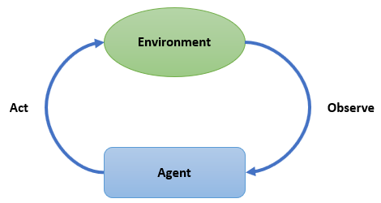

Introduction to Reinforcement Learning
Before showing you a concrete example, let's review some of the key concepts in RL(Reinforcement Learning).

Generally speaking, RL is to learn how to make actions so as to maximize a numerical reward. Two main characters in RL problems are the agent(s) and the environment. By interacting with the unknown environment, the agent seeks to achieve a goal over time. From the perspective of an agent, it needs to know the observation space and the action space of an environment.
Observation Space
The observation of an environment could be a scalar, a vector, a matrix or a high order tensor(or a combination of them). For example, in video games we can usually use an `Array{Int8,3} to represent the observation at each time. The Observation Space tells the agent what kind of input the agent may observe.
Action Space
The Action Space defines what actions are valid to an environment. Just like observations, actions can also have different dimensions and can be discrete or continuous.
Some of the key concepts of an agent are that:
State
State is the agent’s internal representation of the observation from environment. It may or may not be the same with observation.
Reward
After taking an action in the environment, an agent will get a new state accompanied with a numeric reward. Our goal is to maximize some notation of cumulative rewards.
Policy
A policy is used to map a state to an action. It can be deterministic(a hash table) or stochastic(a parameterized classifier/approximator).
Experience Buffer (or Trajectories)
Buffer is used to store the agent’s experiences, including states, actions, rewards and/or some extra_info.
Solving a Simple Random Walk Problem

Suppose our friend Eve starts at the position of 3 in the above figure. It can either move left or right randomly at each time step. If it meets the dog at position 7 then receives a reward of 3 and if it meets the flower at position 1 then receives a reward of 1. In all other cases, the reward is 0. Now consider that Eve choose to move to each direction with the same probability(the policy). And we would like to estimate the value of each position. So that we can further improve the policy.
First, let's initial the environment and the policy.
julia> using Ju
julia> using Random
julia> Random.seed!(123); # to ensure that you get the same result as it is documented here
julia> policy = RandomPolicy([0.5, 0.5])
RandomPolicy{1}([0.5, 0.5])
julia> env = SimpleRandomWalkEnv()
SimpleRandomWalkEnv(7, 3, 3, [-1, 1])
julia> env(sample(actionspace(env)))
(observation = 2, reward = 0.0, isdone = false, extra_info = ())
julia> reset!(env)
(observation = 3, isdone = false)Since we want to estimate the value of each position, we choose an approximator of type TabularV to store and update our estimations(the value function).
julia> approximator = TabularV(length(observationspace(env)));Then we need to decide how to update our estimations. There are many different kinds of algorithms. Here we use one of the simplest algorithms, the MonteCarloLearner. The basic idea behind MonteCarloLearner is that, we apply a policy until the end of an episode and then update the estimation of each state we have encountered by using following up rewards.
julia> learner = MonteCarloLearner(approximator, policy, 0.9, 0.1);Here we set the discount rate to 0.9 and the step size of updating to 0.1.
Then we use a EpisodeSARDBuffer to store the State, Action, Reward, isDone at each time step.
julia> buffer = EpisodeSARDBuffer();Combining all the components above, now we have our agent.
julia> agent = Agent(learner, buffer);Finally, we can train our agent!
julia> train!(env, agent);Every time we call train!(env, agent), the agent will generate an action according to its policy and feed it into the env. Then the env will consume the action and return a reward, isdone and next state.
julia> agent.buffer
1-element EpisodeTurnBuffer{(:state, :action, :reward, :isdone),Tuple{Int64,Int64,Float64,Bool},NamedTuple{(:state, :action, :reward, :isdone),Tuple{Array{Int64,1},Array{Int64,1},Array{Float64,1},Array{Bool,1}}}}:
(state = 3, action = 2, reward = 0.0, isdone = false)It will be too verbose to train our agent step by step. Fortunately, train! can accept an optional argument named callbacks. We can force the training to stop at some condition, like stop at the end of an episode.
julia> callbacks=(stop_at_episode(1),);
julia> train!(env, agent;callbacks=callbacks);
julia> agent.buffer
8-element EpisodeTurnBuffer{(:state, :action, :reward, :isdone),Tuple{Int64,Int64,Float64,Bool},NamedTuple{(:state, :action, :reward, :isdone),Tuple{Array{Int64,1},Array{Int64,1},Array{Float64,1},Array{Bool,1}}}}:
(state = 3, action = 2, reward = 0.0, isdone = false)
(state = 4, action = 2, reward = 0.0, isdone = false)
(state = 3, action = 1, reward = 0.0, isdone = false)
(state = 2, action = 2, reward = 0.0, isdone = false)
(state = 3, action = 2, reward = 0.0, isdone = false)
(state = 4, action = 1, reward = 0.0, isdone = false)
(state = 3, action = 1, reward = 0.0, isdone = false)
(state = 2, action = 1, reward = 1.0, isdone = true)
julia> agent.learner.approximator
TabularV([0.0, 0.06561, 0.0478297, 0.0531441, 0.0, 0.0, 0.0])As you can see, the agent.learner.approximator has been updated a little. Then we increase the number of training episodes to 1000.
julia> callbacks=(stop_at_episode(1000),);
julia> train!(env, agent;callbacks=callbacks);
Progress: 100%|█████████████████████████████████████████| Time: 0:00:03
episode: 1000
julia> agent.learner.approximator
TabularV([0.0, 0.896335, 0.851624, 1.00933, 1.41548, 2.13538, 0.0])Now we get our estimation of each position under the discount rate of 0.9.